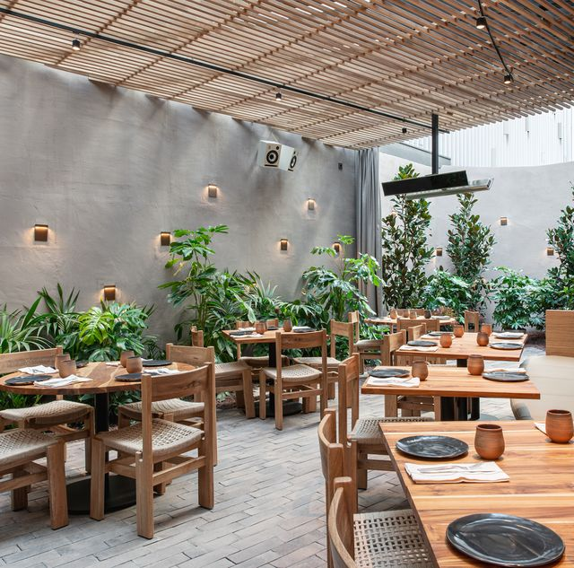

Nuestro servicio habla por nosotros
Nuestro menú:
En Hirzi Tifas, ofrecemos un amplio menú que abarca desde platos indonesios clásicos hasta opciones occidentales innovadoras. Podrás disfrutar de sabores auténticos y fusiones únicas que te transportarán a un viaje gastronómico.
La fusión de la cocina indonesia y occidental crea una amplia gama de platos emocionantes y deliciosos.
Experiencia culinaria:
En Hirzi Tifas, nos enorgullece crear una experiencia culinaria inolvidable para nuestros clientes. Nuestro ambiente acogedor y encantador te hará sentir como en casa, mientras disfrutas de platos excepcionales. Ya sea que estés buscando una cena romántica, una comida familiar o una reunión con amigos, nuestro restaurante es el lugar perfecto para disfrutar de una deliciosa comida en un ambiente agradable.
Eventos musicales:
En Hirzi Tifas, también ofrecemos la posibilidad de mostrar tu talento. Una sesion de microfono abierto para todos aquellos musicos que desean tomar accion y mostrar sus habilidades.
Entradas:
Samosas de queso cheddar y cebolla caramelizada
Tikka de pollo con salsa de yogur y menta
de lentejas con aderezo de curry
Postres:
Tarta de mango con crema de coco y cardamomo
Helado de pistacho con salsa de azafrán
Gulab jamun relleno de chocolate oscuro y acompañado de helado de vainilla
Opciones para todos los gustos:
Una de las grandes ventajas de Hirzi Tifas es que ofrece opciones para satisfacer todos los paladares.
Si prefieres los sabores más tradicionales de Indonesia, puedes probar platos como el rendang, un delicioso guiso de carne con una mezcla de especias exquisita.
Eventos especiales y reservas:
En Hirzi Tifas, también ofrecemos la posibilidad de organizar eventos especiales, como cumpleaños, aniversarios o cenas de negocios. Contamos con un espacio privado y personalizado para hacer de tu evento una ocasión memorable. Además, recomendamos hacer reservas anticipadas para garantizar tu lugar, especialmente durante los horarios más concurridos.
Eventos especiales y reservas:
En Hirzi Tifas, también ofrecemos la posibilidad de organizar eventos especiales, como cumpleaños, aniversarios o cenas de negocios. Contamos con un espacio privado y personalizado para hacer de tu evento una ocasión memorable.